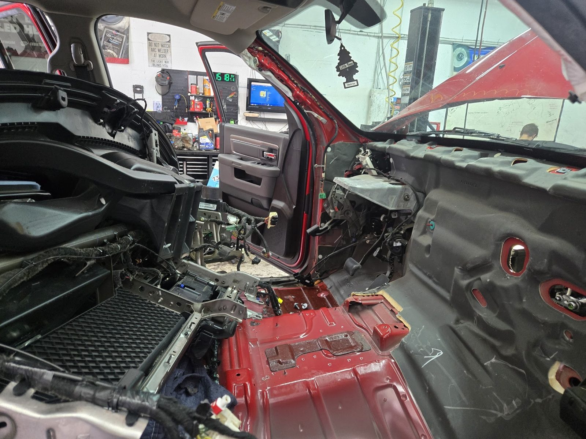
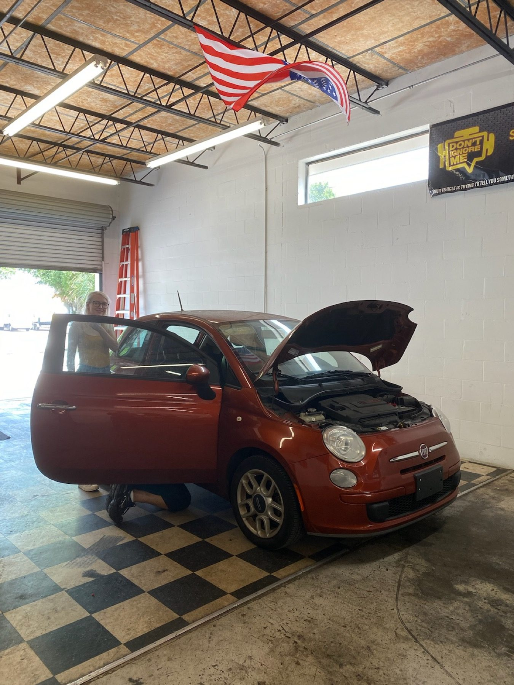
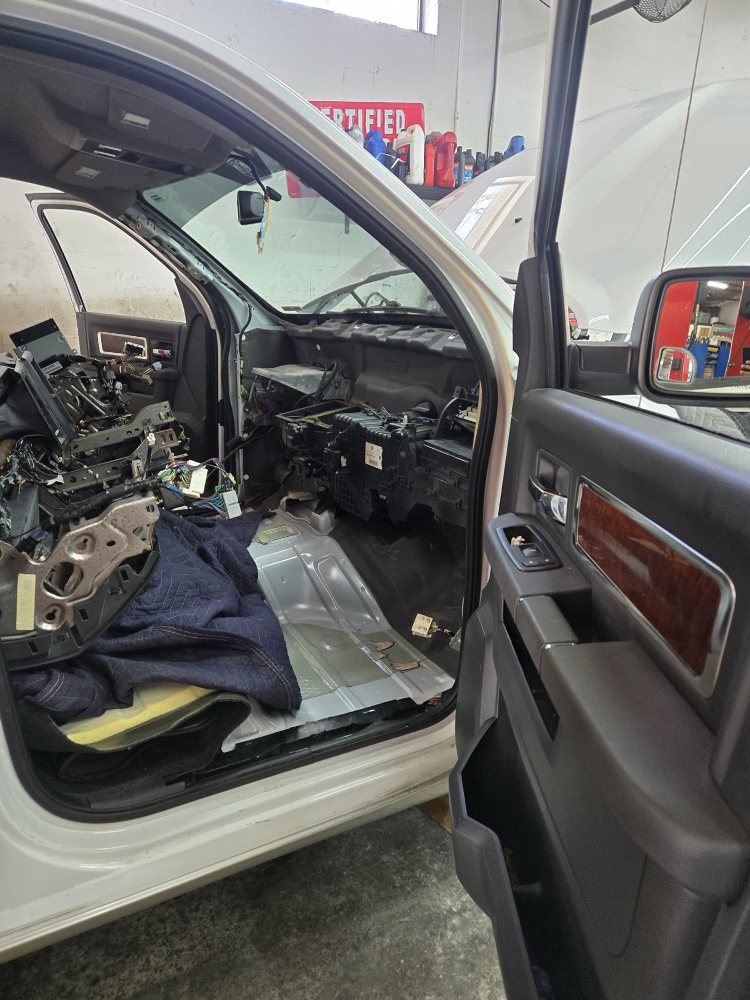

Dave's Automotive · St. Petersburg
Services
Diagnostics, suspension, alignment and A/C repair.
Systems we check
What we check and fix
From warning lights to struts and A/C.
- Checked
- Watch
- Fix now
-

Diagnostics and repairs
We find the cause of warning lights, noises and drivability problems.
- Warning lights
- Noises
- Engine and electrical
-

Struts and alignment
New struts and wheel alignments so the car rides smooth and tracks straight.
- Struts
- Wheel alignment
- Suspension
-

A/C and warranty repairs
A/C repair and warranty work handled at the shop.
- A/C repair
- Warranty repairs
- Oil changes
How it works
From drop-off to drive-away
- 1
Call or drop in
Tell us what the car is doing.
- 2
We inspect
You hear what we found and what can wait.
- 3
Fixed and back to you
Honest work at a fair price.
Good to know
Questions people ask
What are your hours?
Monday to Friday, 8am to 5pm. Closed Saturday and Sunday.
How do I reach you?
Call (727) 607-4052 or send the request form on the contact page.
Where is the shop?
5290 95th St N, Suite A, in St. Petersburg.
What do you work on?
Diagnostics, struts, wheel alignment, A/C repair and warranty repairs.
Do you do alignments?
Yes. Call to book a wheel alignment.
How much will it cost?
Every car is different, so we do not post prices. Call and we will talk it through.